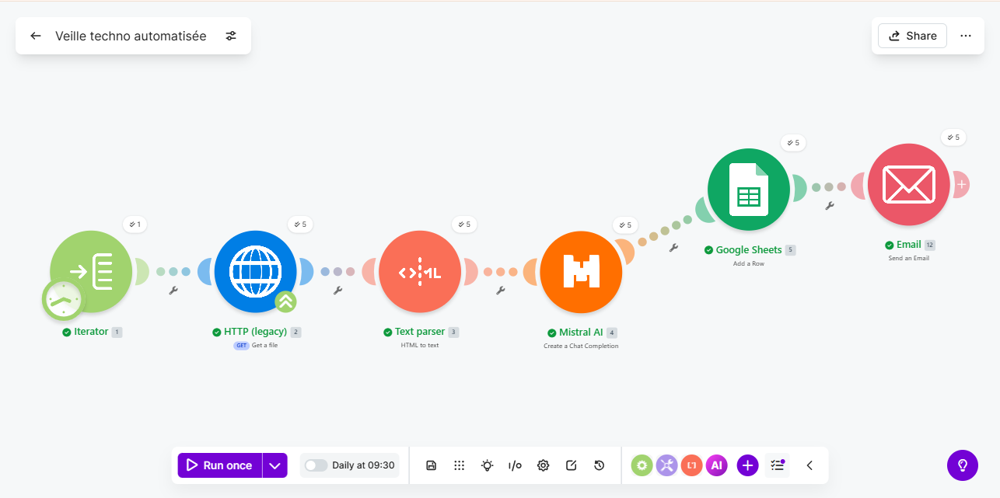

Système automatisé avec Make, Mistral AI et Google Sheets — actif tous les jours à 09h30.
L'intelligence artificielle générative transforme profondément le métier de développeur web. Des assistants comme GitHub Copilot, Claude ou Cursor modifient la façon dont on écrit, relit et teste du code. Cette veille suit les évolutions de ces outils, les nouvelles pratiques qui en émergent, leur impact sur la productivité et les questions qu'ils soulèvent autour de la qualité, de la sécurité et de l'avenir du développement logiciel.
Le développement web et l'IA évoluent à une vitesse considérable. Sans veille active, on prend le risque de travailler avec des outils obsolètes ou de passer à côté de pratiques qui changent la façon de coder. Rester informé est une nécessité professionnelle, pas une option.
L'objectif est d'identifier les tendances émergentes et les outils qui transforment les pratiques de développement — notamment l'influence de l'IA générative sur la façon dont on conçoit, code et déploie des applications web — pour les intégrer intelligemment dans mes projets.
J'ai développé lors de mon stage chez KARA Technology un scénario Make qui se déclenche chaque jour à 09h30. Il collecte automatiquement le contenu de plusieurs sources ciblées, le soumet à Mistral AI pour analyse et synthèse, puis consigne les résultats dans un Google Sheets partagé et envoie un résumé par email.
Chaque résumé quotidien est archivé dans le Google Sheets avec date et source, constituant un historique consultable à tout moment. L'email automatique partage l'information avec l'équipe. Ces données orientent mes choix technologiques, alimentent mes projets et nourrissent les discussions lors des revues de code et des sprints.
